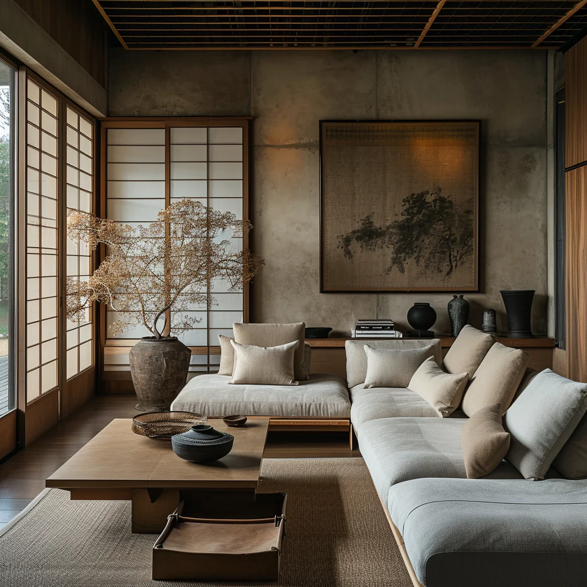
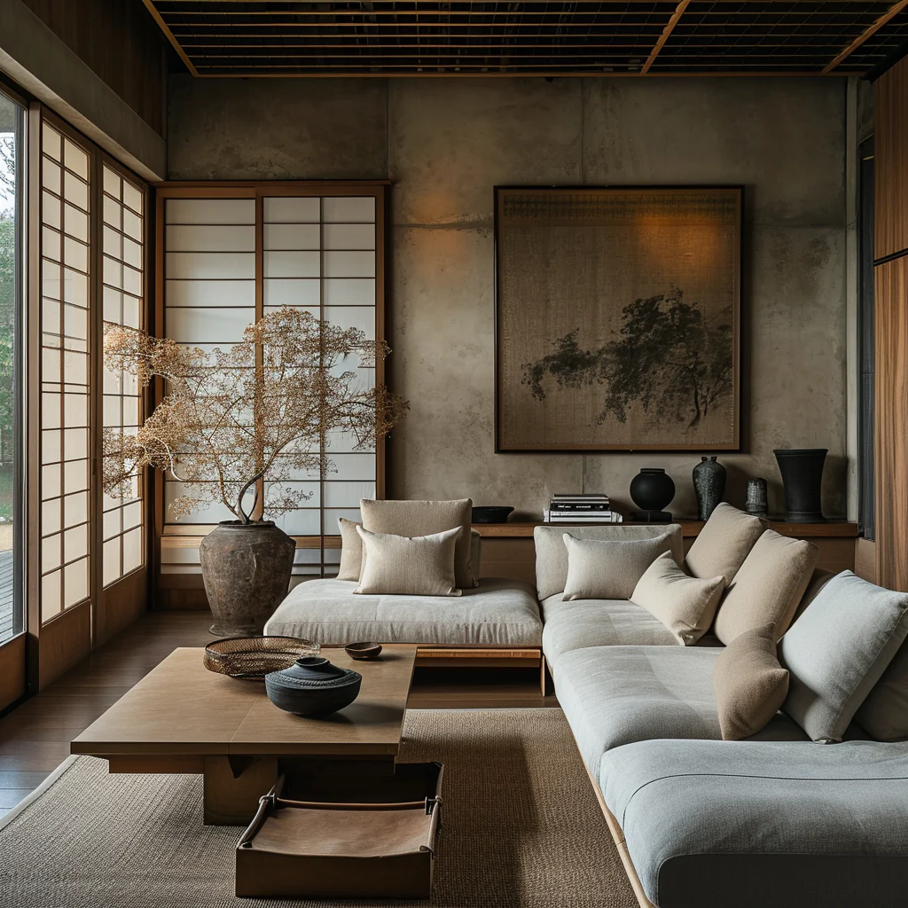

Discover the Essence of Our Spaces
Of course the Japanese room does have its picture alcove, and in it a hanging scroll and a flower arrangement. But the scroll and the flowers serve not as ornament but rather to give depth to the shadows. We value a scroll above all for the way it blends with the walls of the alcove, and thus we consider the mounting quite as important as the calligraphy or painting. Even the greatest masterpiece will lose its worth as a scroll if it fails to blend with the alcove, while a work of no particular distinction may blend beautifully with the room and set off to unexpected advantage both itself and its surroundings. Wherein lies the power of an otherwise ordinary work to produce such an effect? Most often the paper, the ink, the fabric of the mounting will possess a certain look of antiquity, and this look of antiquity will strike just the right balance with the darkness of the alcove and room.
The Art of Shadows
We have all had the experience, on a visit to one of the great temples of Kyoto or Nara, of being shown a scroll, one of the temple's treasures, hanging in a large, deeply recessed alcove. So dark are these alcoves, even in bright daylight, that we can hardly discern the outlines of the work; all we can do is listen to the explanation of the guide, follow as best we can the all-but invisible brush strokes, and tell ourselves how magnificent a painting it must be. Yet the combination of that blurred old painting and the dark alcove is one of absolute harmony. The lack of clarity, far from disturbing us, seems rather to suit the painting perfectly.
Scrolls and Alcoves: A Harmony of Elements
For the painting here is nothing more than another delicate surface upon which the faint, frail light can play; it performs precisely the same function as the sand-textured wall. This is why we attach such importance to age and patina. A new painting, even one done in ink monochrome or subtle pastels, can quite destroy the shadows of an alcove, unless it is selected with the greatest care.A Japanese room might be likened to an inkwash painting, the paper-paneled shoji being the expanse where the ink is thinnest, and the alcove where it is darkest. Whenever I see the alcove of a tastefully built Japanese room, I marvel at our comprehension of the secrets of shadows, our sensitive use of shadow and light. For the beauty of the alcove is not the work of some clever device.
Embracing Patina and Age
An empty space is marked off with plain wood and plain walls, so that the light drawn into it forms dim shadows within emptiness. There is nothing more. And yet, when we gaze into the darkness that gathers behind the crossbeam, around the flower vase, beneath the shelves, though we know perfectly well it is mere shadow, we are overcome with the feeling that in this small corner of the atmosphere there reigns complete and utter silence; that here in the darkness immutable tranquility holds sway. The "mysterious Orient" of which Westerners speak probably refers to the uncanny silence of these dark places. And even we as children would feel an inexpressible chill as we peered into the depths of an alcove to which the sunlight had never penetrated. Where lies the key to this mystery? illtimately it is the magic of shadows. Were the shadows to be banished from its comers, the alcove would in that instant revert to mere void..